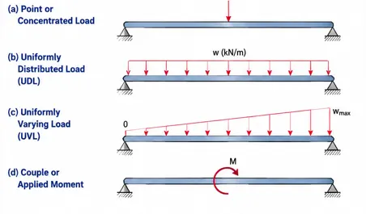
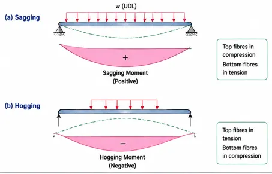
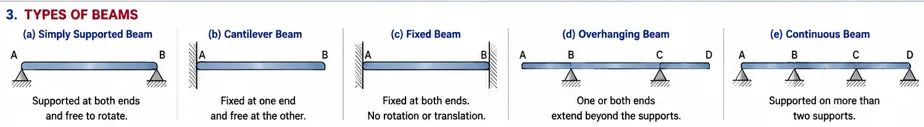
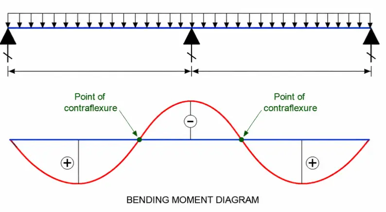
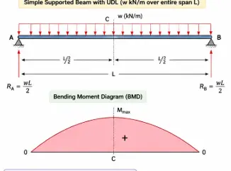

PDF document with questions and answers: Updated Shortly
Short Answer Questions – 2 Marks+
1. List out different types of loads acting on beams.+
The common types of loads acting on beams are point or concentrated load, uniformly distributed load (UDL), uniformly varying load (UVL) and couple or applied moment.

2. What do you understand from sagging and hogging of the beam?+
Sagging: The beam bends in a concave-upward shape and produces a positive bending moment.
Hogging: The beam bends in a concave-downward shape and produces a negative bending moment.
Hogging: The beam bends in a concave-downward shape and produces a negative bending moment.

3. What is the relationship between shear force, bending moment, and the rate of loading at a section of a beam?+
The relationship is:
dM/dx = V
dV/dx = −w
Therefore,d²M/dx² = −w
where M is bending moment, V is shear force and w is the rate of loading.4. Define a beam. What are the primary types of beams?+
A beam is a structural member primarily subjected to transverse loads and designed to resist bending. The primary types are simply supported, cantilever, fixed, overhanging and continuous beams.

5. Define point of contra flexure.+
The point of contra flexure is the point on a beam where the bending moment changes sign from sagging to hogging or vice versa. At this point, the bending moment is zero.

6. What is the bending moment at center of simple supported beam subjected to uniformly distributed load?
+
For a simply supported beam of span L carrying a UDL w over the entire span:
Mcenter = wL² / 8
where w is the load per unit length and L is the span.

7. What is shear force, and how to calculate shear force for a loaded beam?+
Shear force at a section is the algebraic sum of all vertical forces acting on either side of that section. It is calculated by taking the algebraic sum of vertical forces on one side of the section.
SF = Σ Vertical Forces
Essay / Long Answer Questions+
1. A beam is 12 m long, supported at both ends. It has point loads of 10 kN and 15 kN placed at 3 m and 9 m from the left end, respectively. Calculate the bending moment at mid-span and at the points of the loads. Also draw the shear force and bending moment diagrams.+
2. A simply supported beam of length 12 m is subjected to two point loads of 15 kN and 20 kN acting at 3 m and 9 m from the left support, respectively, along with a uniformly distributed load of 6 kN/m acting between the point loads. Calculate the maximum bending moment, and draw the S.F. and B.M. diagrams.+
3. A simply supported beam of length 12 m has a point load of 15 kN at 2 m from the left support and a uniformly distributed load of 5 kN/m over the entire span. Determine the support reactions and draw the shear force and bending moment diagrams. Also determine the maximum bending moment.+
4. A beam AB 20 m long supported on two symmetric supports 12 m apart carries a uniformly distributed load of 6 kN/m together with concentrated loads of 30 kN at the left end A and 50 kN at the right end B. Determine the support reactions and draw B.M. and S.F. diagrams. Mark the value of maximum B.M. and S.F.+